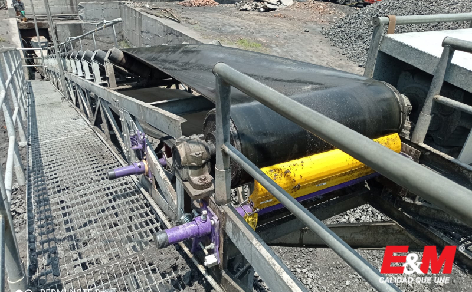
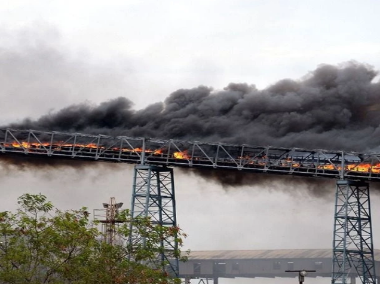

INDUSTRIAS QUE SE BENEFICIAN DE LAS BANDAS TRANSPORTADORAS
El uso bandas transportadoras se ha diversificado hasta el punto de poder encontrar esta increíble herramienta en sectores como el minero, comercial, constructor, agrícola, transporte y mucho más. Conozca los usos que cada uno de estos sectores le dan y anímese a implementarlo en su pequeña, mediana o gran empresa.
Leer más

Bandas transportadoras en entornos exigentes: soluciones para altas temperaturas, químicos y condiciones abrasivas
En el mundo industrial, las bandas transportadoras son esenciales para optimizar la eficiencia en la manipulación de materiales. Sin embargo, cuando estas bandas se utilizan en entornos exigentes, como aquellos con altas temperaturas, exposición a químicos o condiciones abrasivas, es crucial seleccionar el tipo adecuado de banda transportadora para garantizar su durabilidad y funcionamiento óptimo. A continuación, se exploran las soluciones específicas para estos entornos extremos, destacando los tipos de bandas transportadoras de trabajo pesado, los materiales más adecuados y los usos más comunes.
Leer más

¡Aquí puede estar tu noticia! Registrate para subir tus propios artículos
Imagina tus artículos sobre bandas transportadoras en primera plana en nuestro blog. ¿No sería fantástico?
Leer más